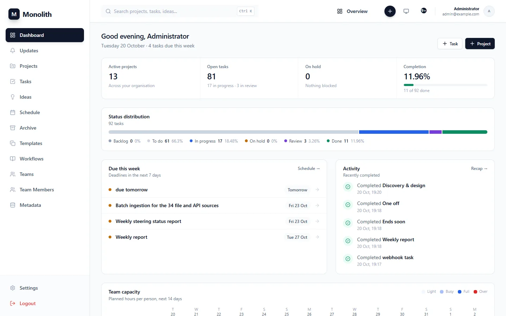

Getting started
From an empty machine to a running Monolith with an administrator, in about ten minutes. Everything runs in containers; nothing but Podman or Docker is needed on the host.
The stack
compose.yaml defines five services. Only the proxy is published to the host; everything else talks over two private networks.
| Service | Container | Role | Reachable from |
|---|---|---|---|
proxy | monolith_proxy | nginx: serves the app, forwards /api (including websockets), /uploads and /mcp | host, http://localhost:${HTTP_PORT:-8080} |
frontend | monolith_frontend | static React build on nginx-unprivileged | proxy |
backend | monolith_backend | FastAPI on uvicorn (non-root uid 10001), migrations at start-up, background workers, MCP | proxy, mail network |
db | monolith_db | PostgreSQL 16 (pgdata volume) | backend |
mailserver | monolith_mail | docker-mailserver: internal SMTP for resets, verification, notifications and digests | backend over mail_net |
Install and start
- Create the configuration. Copy the template and fill in at least the required values (next section).
cp .env.example .env
- Prepare the mail server once. It creates a self-signed TLS certificate and the sender mailbox; Dovecot stops the container two minutes after start if no mailbox exists.
scripts/mail-bootstrap.sh
- Build and start.
podman-compose up -d --build # or: docker compose up -d --build podman ps # every service should report (healthy)
- Open the app at http://localhost:8080. The interactive API documentation is at
/api/docs.
The backend applies database migrations at start-up (AUTO_MIGRATE=true). Upgrading is git pull followed by the same up -d --build.
Configuration
Every variable is documented in .env.example. These are the ones you set on day one.
| Variable | Required | Meaning |
|---|---|---|
POSTGRES_PASSWORD | yes | Database password (the database is never published). |
SECRET_KEY | yes | Signs login and single-purpose tokens. Generate with openssl rand -hex 32; changing it signs everyone out. |
FIRST_SUPERUSER_EMAIL, FIRST_SUPERUSER_PASSWORD | first start | The first administrator, created at start-up if no account has that address. Remove the password afterwards. |
MAIL_DOMAIN, SMTP_USER, SMTP_PASSWORD | yes | Internal mail server domain and the sender mailbox (for example noreply@monolith.local). |
HTTP_PORT | no (8080) | Host port of the proxy. |
APP_BASE_URL | no | Public origin used in e-mail links, the calendar feed and the MCP Host check. |
ALLOW_SIGNUP | no (false) | Let people request an account on /register; an administrator approves each request. |
MCP_ENABLED | no (true) | Mount the MCP server at /mcp. Every client still needs a personal token (9.2). |
MCP_ALLOWED_HOSTS | no | Extra Host names accepted on /mcp besides APP_BASE_URL and localhost. |
CORS_ORIGINS | no | Browser origins allowed to call the API cross-origin. The bundled proxy is same-origin and needs none. |
EMAIL_ENABLED, SCHEDULER_ENABLED | no (true) | Master switch for mail; weekly digest and daily deadline reminders. |
RELAY_HOST … | no | Relay outgoing mail through a provider instead of delivering directly (8.6). |
WEBHOOK_ALLOW_PRIVATE | no (false) | Allow webhooks to private addresses (self-hosted chat). |
The API rejects special-use domains (.local, .test, .localhost, .invalid) in user addresses. MAIL_DOMAIN may be monolith.local, but accounts need a normal domain such as example.com.
First sign-in
- Sign in with
FIRST_SUPERUSER_EMAILand its password. There are no default accounts; old addresses such asadmin@admin.comdo not work. - Remove
FIRST_SUPERUSER_PASSWORDfrom.env. It is only read when the account does not exist yet. - Invite your team from Team Members: create accounts directly, or turn on
ALLOW_SIGNUPand approve requests (8.1). People who get a temporary password must choose their own at first sign-in. - Define global topics and work types in Metadata before the first projects (8.2).

Development mode
podman-compose -f compose.yaml -f compose.dev.yaml up -d --build
The dev overlay bind-mounts the sources (:z for SELinux), runs uvicorn with --reload and the Vite dev server, and publishes:
| What | Address |
|---|---|
| Vite (hot module reload) | http://127.0.0.1:5173 |
| API (uvicorn reload) | http://127.0.0.1:8000 |
| PostgreSQL | 127.0.0.1:54321 |
On Windows, file watching uses polling so changes cross the volume boundary reliably.
Tests
# backend unit tests (no database); CI runs the explicit list in .github/workflows/ci.yml cd backend && pip install -r requirements.txt pytest pytest-asyncio && python -m pytest -q tests/ # frontend cd frontend && npm ci && npm run typecheck && npm test && npm run build # live checks against a stack with a FRESH database (they create users and projects) scripts/live-smoke.sh # the generated parts of this guide python scripts/docs/gen_reference.py --check
Never run scripts/live-smoke.sh against a stack that holds real data: it creates test accounts and projects. Use a throw-away stack with its own project name, port and volumes.
Podman and rootless notes
- All host ports are above 1024, so no
net.ipv4.ip_unprivileged_port_startchange is needed. PERMIT_DOCKER=noneon the mail server: rootless networking NATs source addresses andconnected-networkscould open a relay. The backend authenticates on port 587 with STARTTLS instead.- Mail state lives in named volumes; Postfix creates unix sockets that fail on Windows, macOS or network bind mounts. Only
mailserver/configis bind-mounted. loginctl enable-linger $USERkeeps rootless containers running after logout on Linux.- Several stacks on one host need their own
MAIL_CONFIG_DIR, project name and port; re-runscripts/mail-bootstrap.shafter rotatingSMTP_PASSWORD. - The backend runs one worker: live whiteboard rooms and the notification socket are kept in process (2.1).